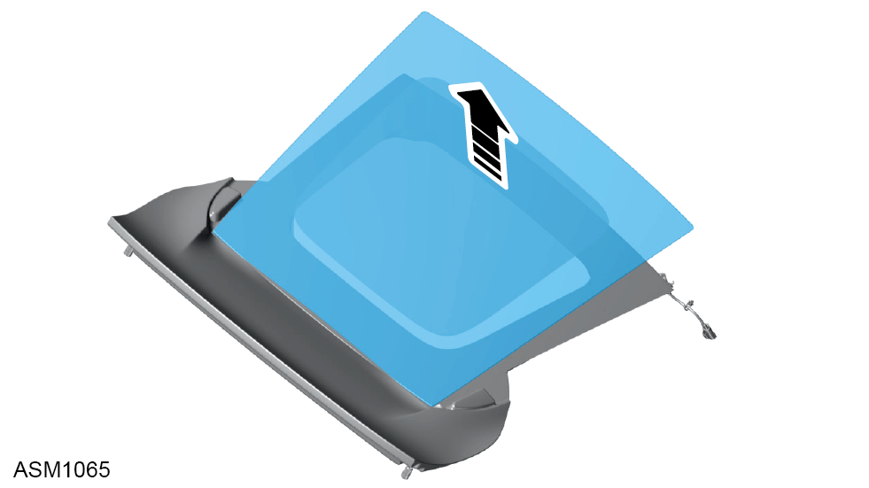
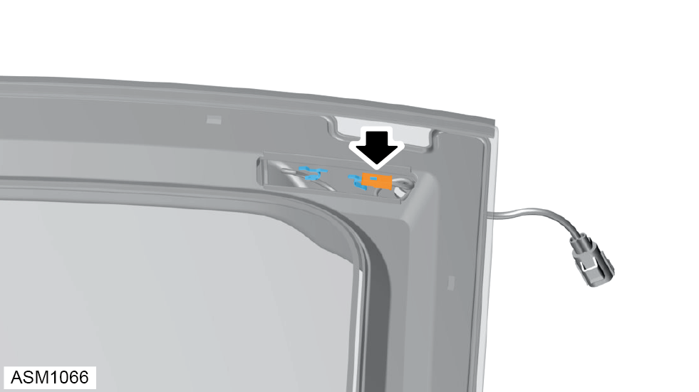
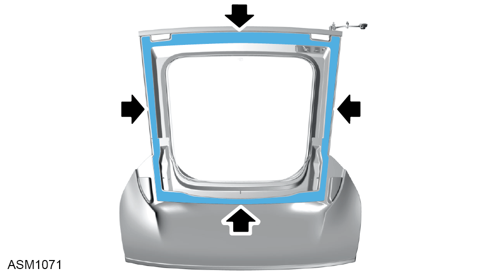

Tailgate Glass
Print
Operation Code: 11.01.11-02
Removal
- Remove tailgate. Refer to procedure.
- Release adhesive securing tailgate glass trims (x2) to tailgate.
NOTE: The tailgate glass trim is retained using adhesive strips.
- Remove tailgate glass trims (x2).
- Using suitable equipment, cut adhesive securing tailgate glass to tailgate.

- Lift tailgate glass to access heated screen connectors.

- Disconnect tailgate heated screen from tailgate.
NOTE: Reconnect heated screen connectors before bonding glass to tailgate.
- Using assistance remove tailgate glass.
NOTE: If glass is to be reused place on suitable surface to prevent damage.
- Remove rubber spacers (x8) from tailgate.
NOTE: Always record quantity and fitted position of spacers.
Installation
- Installation is the reverse of removal procedure except for the following:
- Install tailgate.
 CAUTION: Ensure tailgate is correctly aligned before proceeding.
CAUTION: Ensure tailgate is correctly aligned before proceeding.
- Inspect heated screen trace lines for damage.
- Remove old adhesive from tailgate.
- Clean tailgate mating surface using betaclean 3300.

- Apply betaprime 5404 primer to tailgate aperture.
- Apply betaseal 1580 to tailgate aperture.
- Install rubber spacers (x8) into adhesive.
- Clean area of glass around tailgate glass heating element using betaclean 3300.
- Using assistance install tailgate glass to tailgate.
NOTE: Reconnect heated screen connectors before bonding glass to tailgate.